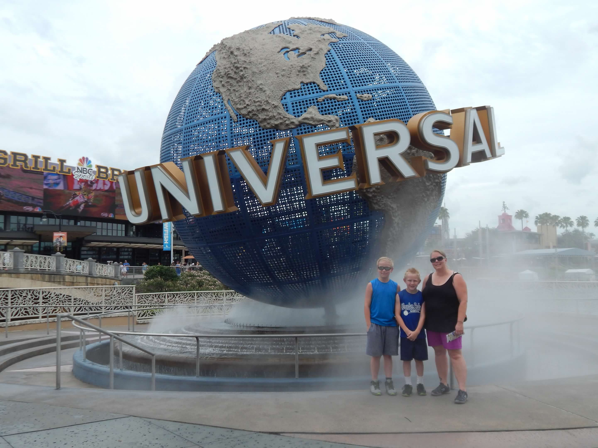
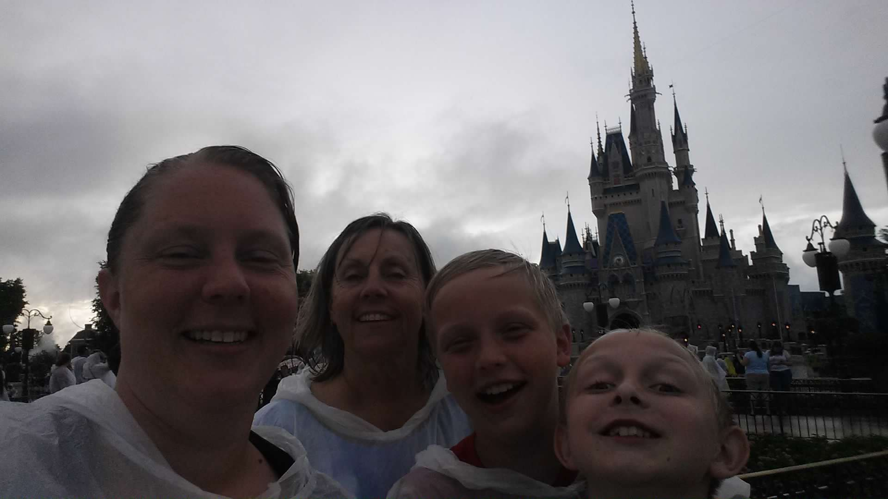

Our trip to Disneyworld 2017
My mom decided she wanted to take my boys and me on a special trip. She wanted to take us to Disneyworld. My older son Anthony was 12 years old and my younger son Brayden was 9. She really wanted the boys to experience the magic of Disney. She asked me to plan the trip. It was overwhelming at first but she told me to plan it as if it was just my boys and me. She just wanted the trip to be fun for them. Once I looked at it like that, it was easy to plan.
We went in June. Anthonys last day of school was Friday and our flight left the very next morning. It was very exciting because the boys had never been on an airplane before. The tickle in their tummies showed in the look on their faces. We were off to Florida.
We stayed at my mom's friend's condo. It was a very nice place. It had three bedrooms and a community pool! We rented a car to get around and I went to Wal-mart for groceries for the week.
Our first day in Florida we went to a town called Tarpon Springs. It is a sponge farming town. My friend recommended we go because he and his family always have a nice time. We went on an excursion on a boat. We saw lots of wildlife including dolphins! We rode the boat out to an island in the Gulf of Mexico where we were allow to collect shells and keep them. It was so much fun.
The next day was our first park day. I chose Universal Studios for our first park. We got up early and had breakfast. I packed the cooler with drinks and made everybody sandwiches for lunch. We love our picnics in the parking lots!
We arrived at the park an hour before opening. We were very close to the front of the line. I had the rides and shows all planned out because I had done my research and purchase an unofficial guide book. We got on our first 5 rides within the first 30 minutes. It was awesome! We had lots of fun and went on lots of rides. We stayed until the park closed.
The next day was Animal Kingdom. We were really tired and slept in a little. Once we got up, we had breakfast and I packed the cooler with lunch again. I had my ride and show list for this park as well. We had so much fun at this park too. The only thing I didn't quite enjoy was the rain. We got rained on everyday we were in Florida. I didn't realize it then but June is the rainy season in Florida. We stayed at the Animal Kingdom until they closed for outside guests. If you were staying in a park hotel, they gave you extra time in the park called Magic hours.
After two park days back to back, we took a rest day and swam in the condo pool. I did find an interesting dinner theater with a pirate show. We had a great time watching the show and eating together. We were in the green pirate's section. We cheered for him to win.
Our last park day was the Magic Kingdom. It was for sure my favorite day. We rode roller coasters and saw a couple shows. We got rained on again but we didn't care we were having the best time. We waited until dark to see the fireworks show over cinderella's castle. It was truely magical.
I am so grateful to my mom for allowing me to plan the trip. We had such and amazing time. I even asked her on our way home if there was anything she would have done differently. When she said no, I was so proud. I worked hard planning and executing and it all paid off. What a memorable vacation our Disney Adventure was.